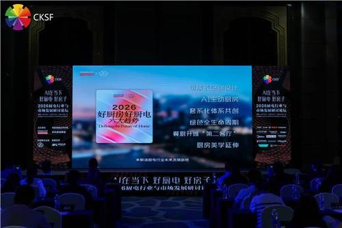

1
厨房智能硬件 · 厨房空间设计 · 竞品动态
华帝隐系列烟机 Y9 入选优质供给：把“净烟科技”藏进厨房空间
“好厨房好厨电”研讨论坛把 AI、地产、设计与厨电放到同一张桌上，华帝用半隐式烟机讲了一个从单品到空间体验的竞品故事。

报道提到，华帝隐系列烟机 Y9 采用半隐式设计，并以 32m³/min 爆炒风量、1600Pa 最大静压、蒸水洗自清洁和 VOC 监测等能力，把烟机从“排烟设备”包装成厨房空气管家。
更值得看的是话术变化：华帝强调 AI 的价值不是替代用户烹饪，而是降低中式烹饪门槛、保留烹饪乐趣。这正贴近未来厨房的产品判断：用户要的是少守候、少清洁、少打扰，而不是被复杂智能重新教育。
小编有话说这条对我们有直接参考价值。烟机的竞争正在从“更猛”走向“更懂空间、更懂空气、更少存在感”，真正的智能要能藏在体验里。